Coming in v9.10: Pocket Packs
Card packs, a rebuilt sim that reads the players on the field, and playoff intros with music. This one is dropping soon. When it lands, the game updates itself the next time you open it.
Pocket Packs
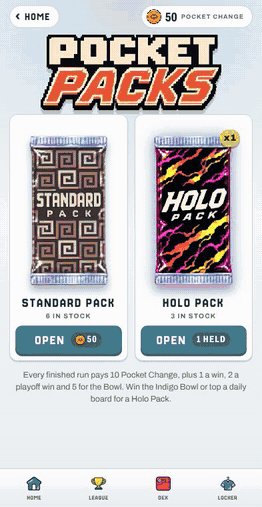
Rip packs, pull gear
Every run you finish now pays Pocket Change. Spend it in the Pack Shop and pull stuff for your home screen. No words on the opening, just your thumb:
- Swipe across the top to tear the pack.
- Swipe the card to flip it.
- Swipe up to keep it.
What's in the packs is a surprise. That card in the clip is blacked out on purpose.
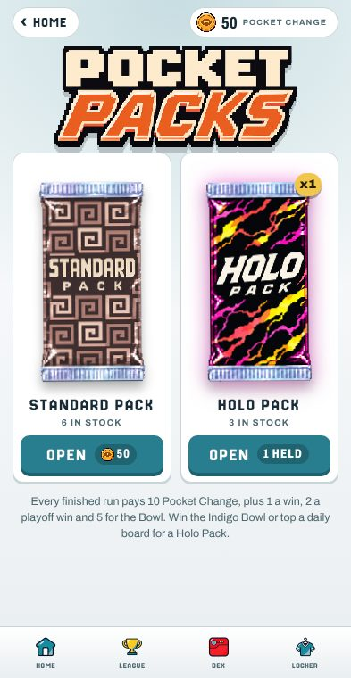
Two packs
- Standard Pack: 50 Pocket Change . One random Common you don't own.
- Holo Pack: can't be bought. Win the Indigo Bowl or finish a day on top of the daily board and one is yours. One random Legendary you don't own.
- No duplicates, ever. Everybody can own one of everything. When you've pulled a pack's whole set it reads Sold out until the next drop.
Tap the coin in the Home header to get to the shop. Whatever you pull lands in your Locker.
Sim Engine 7
A deeper sim engine
Sim Engine 7 is the most advanced version of the game's engine yet. It adds position-specific matchups, so every snap is decided by the players actually lined up against each other: quarterback, target and coverage, rusher and blocker, back and tackler.
Offense
- Passing: the QB's accuracy and decisions, and the target against the man covering him. Pressured throws complete less and get picked more.
- Running: the blocker at the hole decides whether there's a lane, and the back's moves decide the chunk runs. Ball security decides fumbles.
- A real backfield: your HB is the workhorse. Spread had been handing about 40% of the carries to receivers and the TE.
- Breakaways: the carrier's speed and moves against the closest chaser. The old cap is gone.
Defense
- Pass rush: each rusher is matched against the blocker in front of him. Win that and you get pressure; a sack is pressure the QB couldn't escape. One great edge rusher now wrecks drives.
- Coverage: your corners and safeties are matched against the receiver they're on. Good coverage lowers completions on that target and turns bad decisions into picks. There's no flat interception rate anymore.
- Run defense: the defender taking on the blocker at the hole decides stuffs, and your tacklers decide whether a run stays short or goes for a chunk.
- Speed on defense: your fastest chaser is what stops a breakaway, and a fast returner turns picks and fumbles into touchdowns.
- Your game plan counts: the coverage shell you call feeds into the interception odds.
Both sides
- Hot and cold days: every player runs a couple of rating points up or down each game.
- Return touchdowns: kick and punt returns can go the distance (about one every ten games), with their own cut screen.
What 10 rating points are worth, in points per game
From 1,200 simmed seasons. Overall balance held: about 7 wins a season and roughly 1 in 4 teams making the playoffs, same as before.
Playoffs got loud
Intros and music
Tap into a playoff round and you get a battle-start intro: flashes, a wipe to black, silhouettes, then the slam on the beat. Each round has its own track and the Bowl has a champion song if you win it.
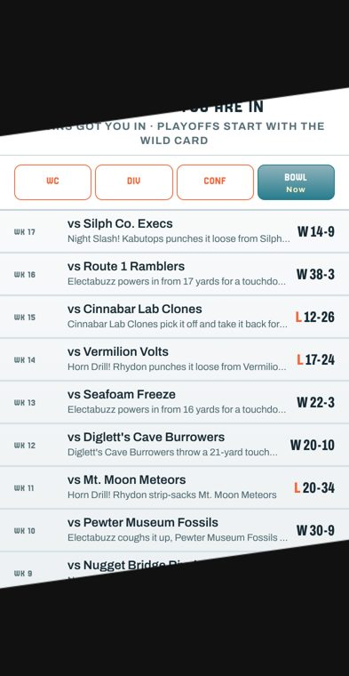
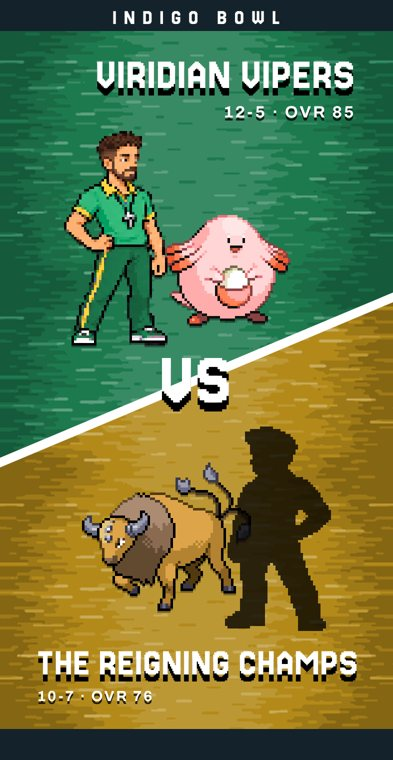
Settings > Cinematic mode turns it off if you just want to play. Music has its own volume, and the silent switch mutes it.
Wicked Wednesday
The hard twin of Freaky Friday. Every Wednesday the daily comes with a handicap rule that makes the draft tougher, and the rule rotates week to week. Wednesday runs stay off the all-time boards, same as Fridays.
Fixes from your reports
- Big-play screens show the right guyX-Factor cut screens were naming the wrong player or position about a third of the time. Fixed.
- Taps after your phone sleepsComing back mid-run could leave the buttons shifted off where you tapped. Fixed.
- Real shiniesShiny Pokémon use their true shiny sprites and keep their color everywhere, including the playoff screens.
- Master Ball capturesA captured Pokémon no longer drops itself into a spot. You place it.
- Home screen artThe home stage now fits tall phones without cropping the sign.
The league so far
Everything played since launch on October 30, pulled from every manager's career save. The Pokémon lists and high scores come from the 538 runs that posted to the league board.
Top 10 Pokémon on title teams
- 1
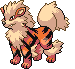
Arcanine40titles - 2
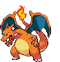
Charizard39titles - 3
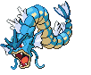
Gyarados39titles - 4
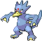
Golduck37titles - 5
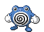
Poliwhirl35titles - 6
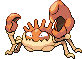
Kingler35titles - 7
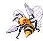
Beedrill34titles - 8
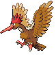
Fearow34titles - 9
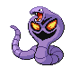
Arbok34titles - 10
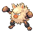
Primeape34titles
Cloyster tied the last spot at 34.
Captains who won it all
- 1Charizard10titles
- 2
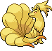
Ninetales8titles - 3
 Dragonite7titles
Dragonite7titles - 4
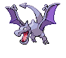
Aerodactyl7titles - 5Lapras6titles
Most season MVPs
- 1
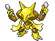
Alakazam36MVPs - 2
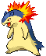
Typhlosion32MVPs - 3
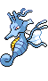
Kingdra29MVPs - 4
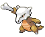
Marowak29MVPs - 5Gyarados25MVPs
High scores · Classic
- 1
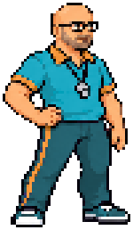
Iain17-0 · OVR 90286score - 2
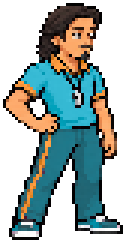
Phill17-0 · OVR 88 · daily285score - 3
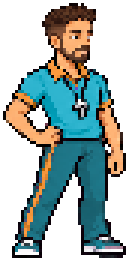
Danny17-0 · OVR 93282score - 4
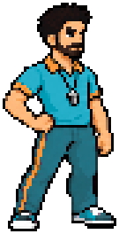
Chandler16-1 · OVR 94267score - 5
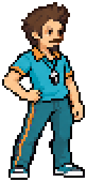
Branden16-1 · OVR 83259score
High scores · Gold
- 1
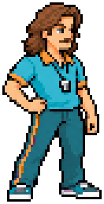
Chad17-0 · OVR 99288score - 2Phill17-0 · OVR 98287score
- 3
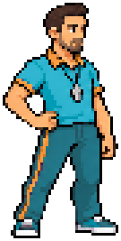
Louie17-0 · OVR 95 · daily285score - 4Danny17-0 · OVR 99282score
- 5Branden17-0 · OVR 97281score
Each manager's best run. Wednesday and Friday dailies don't count on these boards.
Daily board wins
- 1Danny3daily wins
- 2Chad2daily wins
- 3Phill2daily wins
One each: Louie, Nick, Iain, Chandler, Bryce.
Trophy case
- 1Branden128 runs39titles
- 2Danny100 runs37titles
- 3Chandler94 runs27titles
- 4Louie94 runs22titles
- 5
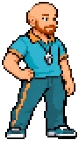
Nick59 runs15titles
Odds and ends
- Gold is the people's mode418 Gold runs to 120 Classic.
- Most draftedGyarados, on 100 rosters. Arcanine is next at 97.
- Luckiest charmQuick Claw. 11 of the 12 teams that pulled it won the Bowl.
- Shiny magnetGyarados has shown up shiny 5 times, more than anyone.
- The grinderBranden, 128 runs. Danny is next at 100.
- Best win rateDanny at 1087-256 (0.809), 10 runs minimum.
- Best coach scorePhill, averaging 70 on Coach's Call.
- House styleShowtime is the most common offense (103 teams) and No Fly Zone the most common defense (90).